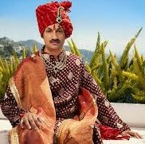
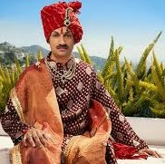

KERELA'S TURBAN
Thalappavu means turbans which were worn by men of authority. It was a traditional symbol of state authority/power, hence not worn by anyone (even upper class) unless they are associated with corridors of power.There were two types of Thalappavu. The Military Turbans and Royal Turbans.
 
